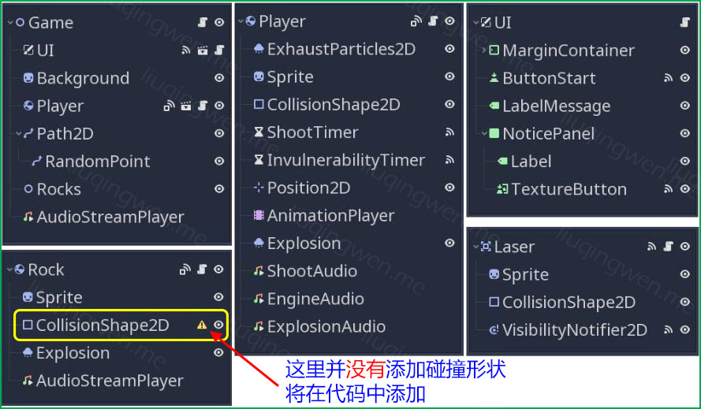
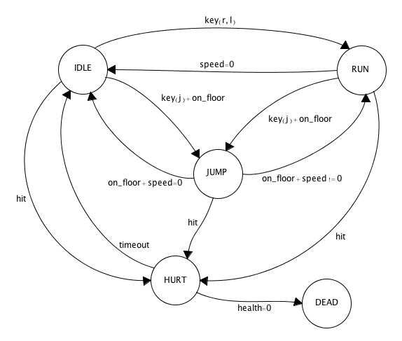
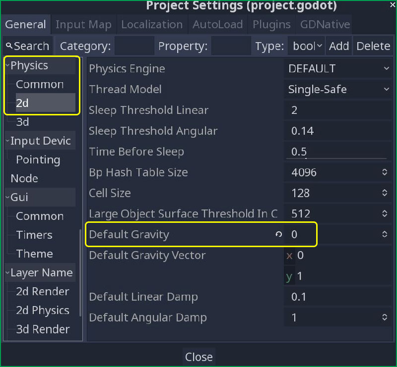

Godot3游戏引擎入门之十四：RigidBody2D刚体节点的应用以及简单的FSM状态机介绍

一、前言
时间飞逝，距离上次更新已经有半年之久！这几个月里我只有三分之一的时间很忙，相反其他时间是比较闲的，但是由于空闲时间非常“碎片化”，导致我一直没有集中精力搞自己喜欢的“小游戏”了。首先对我的读者表示非常抱歉！嗯，从本篇开始，我会陆陆续续更新一些新的文章，尽管更新的频率可能会变得“佛系”，不过我肯定不会放弃 Godot 的，哈哈。 :sunglasses:
不知不觉， Godot 3.1 正式版都已经发布好几个月了，现在最新的稳定版本是 3.1.1 ，不知道大家有没有感受到新版本中的一些新特性所带来的开发乐趣呢？关于新特性这里我先不讨论，在今天要介绍的这个小游戏制作过程中，我要告诉大家一个“很不幸”的消息：新版本中的 RigidBody2D fails with a bug! :joy: 对，你没看错，我遇到 Bug 了，而且还不算个小问题，它直接导致了我的游戏不能正常地“好好玩耍”！
话又说回来，我所要讲述的这个游戏是一个非常无聊的小游戏，仅用来作为示例演示而别无他意，我会在文章中指出新版本 Bug 出在哪，如何解决等。另外，游戏中包括的一些图片文件、音乐素材、甚至不少源代码都是来自或者参考了 Chris Bradfield 的一个名为 Space Rocks 的示例游戏，他的这个项目是开源的，地址在此： https://github.com/kidscancode/Godot-Game-Engine-Projects 。

我想通过本篇主要讲述以下几个小部分：
- 介绍 RigidBody2D 刚体节点的基本属性
- 刚体节点的基本应用以及注意点
- 游戏场景的结构关系与核心代码说明
- 最简单的 FSM 有限状态机介绍和应用
- 新版本中存在的 Bug 以及解决方法
主要内容： RigidBody2D 刚体节点的应用以及简单的 FSM 状态机介绍
阅读时间： 12 分钟
永久链接： http://liuqingwen.me/blog/2019/07/20/introduction-of-godot-3-part-14-make-a-game-with-rigidbody2d-node-and-the-fsm-introduction
系列主页： http://liuqingwen.me/blog/introduction-of-godot-series/
二、正文
本篇目标
- 了解刚体节点的基本属性和作用
- 操控刚体节点的正确姿势
- 刚体节点的碰撞检测与响应处理
- 简单的 FSM 机制实现
- 版本更新带来的代码更新
游戏的主要场景
我之前已经介绍过几个小游戏了：
相比之前的游戏，本篇中我要介绍的这个太空飞船*小游戏算比较简单的一个，游戏中的元素类型少、操作也相对简单，但最重要的一点是，在本游戏制作中，我重点使用了 *RigidBody2D 刚体节点，这与之前讨论的 KinematicBody2D 有着很大的区别，后续我们会讨论，这里先预览一下游戏中的所有场景结构吧：

唯一一个要注意的地方我已经在上图中作了标注： Rock.tscn 岩石场景中的子节点 CollisionShape2D 碰撞图形没有定义实质的形状。这是因为我们需要在游戏中动态生成不同尺寸的岩石，所以选择在代码中根据其大小创建对应的碰撞图形：
1 | func _ready(): |
我省略了一些代码，有需要的话可以参考我的项目源码，这里我就不全部贴出来了，其他的部分我也视情况作了一些注释，相信大家一眼就能看懂。 :smiley:
FSM 简介与实现
FSM 即 Finite State Machine 有限状态机的缩写，相信很多游戏开发者都听过或者在项目中使用过这种模型。在 中文维基百科 中是这样描述的：有限状态自动机，简称状态机，是表示有限个状态以及在这些状态之间的转移和动作等行为的数学模型。

上图来自 Chris Bradfield 的一本书[《 Godot Engine Game Development Projects 》]，图中每一个圆圈表示玩家的一种状态，在某种情况下，比如键盘输入、被攻击、超时等原因，玩家会从当前状态沿着箭头切换到另一种状态。如上图，举个例子：玩家处于空闲状态（ IDLE ）下，如果按下按键（ key ）则进入跑步（ RUN ）状态，如果玩家速度为 0 （ speed=0 ）则从跑步状态切回空闲状态。
关于状态机我了解的并不多，但是我在网上找到了一篇关于游戏设计模式之状态模式的文章，内容介绍非常详尽，我已经把它翻译了出来，有兴趣的朋友可以参考，当做扩展阅读吧，文章链接：【翻译】游戏设计模式之状态机。 :smiley:
本游戏中，我参考了 Chris Bradfield 的《 Godot Engine Game Development Projects 》一书中 Space Rocks 小游戏的设计，下图同样来自此书：

可以看到，玩家即太空飞船具有以下四个状态：
INIT即初始状态，这种状态下飞船不可见，也不会发生碰撞事件，等待游戏开始ALIVE即正常状态，初始状态下点击开始按钮即进入该状态，飞船恢复正常并接受相关事件INVULN无敌状态，这种情况是飞船被攻击时进入的状态，一小段时间后自动恢复到正常状态DEAD死亡状态，生命值耗光后进入该状态，即游戏结束，随后自动进入INIT状态
结合状态图，代码中实现起来非常简单，相关地方我也做了注释，以下是主要代码部分：
1 | func _changeState(newState) -> void: |
一个方法实现了 FSM ，并没有所谓的高大上嘛，嗯……但是，这毕竟只是一个简单、非常简单的小游戏，而且，使用这种思路避免了代码中多个 bool 布尔类型和 if...else... 多层嵌套的混乱局面。
刚体的属性及使用
在之前的文章中我已经介绍过了 Godot 中的三种主要物理节点的功能特点和使用场景： KinematicBody2D/StaticBody2D/RigidBody2D ，其中 KinematicBody2D 是我们最重要的主角，关于它的介绍也扩展了不少，比如： Godot3游戏引擎入门之十二：Godot碰撞理论以及KinematicBody2D的两个方法。但是，对于 RigidBody2D 刚体节点，相反我仅做了使用场景的一个简单介绍和比较，所以，在本次小游戏中，我们撇开 KinematicBody2D 转而把精力集中到 RigidBody2D 上，重点介绍其使用和相关注意事项等。
其实在很多场景下 RigidBody2D 都是非常实用的，比如，想象一下，用 Godot 做一个类似愤怒的小鸟游戏，那么场景中肯定会有很多刚体节点，只要轻松一点，各种物体相互碰撞到处乱飞，相反，你完全不用自己去编写太多关于物理碰撞理论的代码就实现了游戏的相关特性，是不是很爽？这就是刚体节点在游戏中的应用场景之一。
1. 刚体的一些属性
刚体和我们现实生活中的物体非常相似，所以一些这些物体的共有特性在 RigidBody2D 节点中也有所提现。首先，最重要的一点就是刚体和万有引力那密不可分的关系，在 Godot 中设置重力（ Gravity ）对刚体的影响主要有两种方式：一是在项目中设置全局引力值；二是在刚体属性中设置引力的缩放系数。
项目中的设置参考下图，具体在 Project Settings -> General -> Physics -> 2d 中找到 Default Gravity 即默认引力值配置，在本游戏中，由于处于外太空的所有物体都不受重力影响，所以可以在这里进行全局配置，把默认引力值设置为 0 。

另一种方式则是设置刚体属性中的 Gravity Scale 引力缩放系数值，它表示物体受重力的影响大小，本游戏中没必要进行设置。其他刚体的一些常见属性有：
- Mass/Weight ：质量和重量，
G = mg重力公式说明了重量和质量、引力三者的关系 - Contacts Reported/Contact Monitor/Can Sleep ：是否响应碰撞以及响应碰撞体个数、能否休眠
- Linear/Angular/Applied Forces ：分别设置线性速度和阻力、角速度和阻力、受力和扭矩力
- Friction/Bounce ：碰撞材质相关属性，设置刚体的摩擦力和弹性系数等
最后一组属性的设置之前，你必须创建一个新的 PhysicsMaterial 即碰撞材质，这与老版本 Godot 中刚体属性设置稍微不同。另外，刚体还有一些其他的属性这里并没有完全列出来，比如 Mode 刚体模式或者 Custom Integrator 自定义碰撞响应等，我们暂时不讨论，在之后的文中如果用到再介绍吧。 :grin:

上图是玩家和岩石节点的属性，他们都是刚体节点，但是设置还是有差别的。可以看到，我给 Rock 岩石刚体覆盖了默认的材质属性，设置摩擦阻力为 0 并添加了一定的弹性力，这样让岩石在太空中碰撞起来后的响应更有趣；而玩家 Player 即飞船刚体属性配置中，最重要的是我勾选开启了 Contact Monitor 属性（默认关闭），这对游戏的正常运行非常关键，否则我们无法检测到宇宙飞船和其他任何敌人（岩石）之间的碰撞。
2. 刚体的碰撞测试
在我们之前的游戏中，碰撞检测一般是 Area2D 的专项，在我们这个游戏中也有 Area2D 节点的使用，比如 Laser.tscn 子弹场景。然而我们还需要响应太空飞船和岩石之间的碰撞，他们都是刚体，如何响应呢？前面我已经说明了开启碰撞检测的属性，除此之外，我们还要在需要主动检测碰撞的刚体中设置 Contacts Reported 属性值，即碰撞体检测数量，这里我们设置为 1 对于这个游戏已经足够，那么碰撞响应处理的代码如下：
1 | func _on_Player_body_entered(body): |
除了开启碰撞，我们有时候还需要暂时关闭碰撞检测功能，比如飞船进入无敌状态的时候就不应该和其他任何物体发生碰撞了，和之前的游戏一样，我们的思路是：直接禁用飞船的碰撞图形 CollisionShape2D 即可，代码 _collisionShape.disabled = true 一行搞定。
当你觉得一切就绪的时候，“诡异”的事情发生了：飞船在禁用了碰撞图形后，居然还能与其他碰撞体进行正常的碰撞响应！其实这在 Godot 3.1 之前的版本中是不会出现的，一切正常，但是从 3.1 的版本开始：
In 3.1 Godot doesn’t let you change the physics state during the physics processing stage. This change (
$CollisionShape2D.set_deferred("disabled", true)) to the code tells it to disable the shape as soon as physics processing is complete.
这是我在遇到这个问题后从 KidsCanCode 博主那里得到的解答，大致意思是：我们不能在物理模型碰撞检测发生的过程中直接操作碰撞图形，相反应该使用 set_deferred 方法，这就是告诉引擎，在物理碰撞处理完阶段再进行设置。修改 _collisionShape.disabled = true 如下即可：
1 | # _collisionShape.disabled = true # 这在 Godot 3.1 版本中不能正常运行 |
除了这一点需要注意之外，其他的和之前我们介绍的 KinematicBody2D 的处理几乎一样。 :smile:
3. 使用代码控制运动
实际上刚体的物理碰撞检测和响应都是交给引擎自动完成的，所以我们很多时候没必要插手刚体的运动，但是在本游戏中，我们的太空飞船并不适用，我们仍然需要监听并控制它的一举一动：不能飞出屏幕之外、设置其角速度和线速度、飞船的位置和角度重置等。
1 | self.position = Vector2.ZERO |
以上代码使我们常用的设置，但是不幸的是，这并不适用于 RigidBody2D ，这在 Godot 官方文档中有说明：
Note: You should not change a RigidBody2D’s
positionorlinear_velocityevery frame or even very often. If you need to directly affect the body’s state, use_integrate_forces, which allows you to directly access the physics state.
嗯，如果你想操作 RigidBody2D ，需要改用 _integrate_forces 方法：
1 | func _integrate_forces(state): |
通过 state 可以自由设置刚体的位置，比如上面的代码主要是控制飞船在窗口边缘的位置，另外，这里还有一个设置，由于玩家死亡后，我没有删除其引用而是将其隐身，那么飞船的位置是不固定的，游戏恢复重新开始后需要重置其位置为初始位置，这里同样地需要在 _integrate_forces 方法中进行设置，如上代码的注释我已经做了说明。
最后再啰嗦一句：对于刚创建（比如使用 instance 方法）的刚体物体，直接设置其 position 位置属性是没问题的，注意别混淆了。 :grin:
新版本中刚体的问题
游戏开发过程也就是学习的过程，也是填坑的过程，前面我们已经了解到了 Godot 3.1 新版本中的一个细节问题了：如何正确设置刚体的碰撞图形属性，需要使用 set_deferred 方法。然而在本游戏的制作过程中，我还遇到了另一个 3.1.1 稳定版本中尚未解决的 Bug ，而这个 Bug 居然在 Godot 3.0 中也是存在的：如果你一开始禁用刚体的碰撞图形，然后再经过过一段时间再启用，那么你的刚体变成了真正的*直男——嗯，只能前进不能旋转*！如下代码，第二行会失效：
1 | state.apply_central_impulse(force) # 线性冲量，有效。 |
可以简单地通过下面的代码重现这个 Bug ：
1 | func _ready(): |
 )
)
不过这个 Bug 在 Godot 3.2 开发版本中已经得到了修复，关于开发版本的构建可以到这里下载： Unofficial Godot Engine builds ，关于这个 Bug 我也在官方 Github 上开了一个 issue ，传送门： https://github.com/godotengine/godot/issues/30551 。不管怎样，这个 Bug 肯定会在下一个稳定版本中修复的，大家放心吧。
嗯，如果想测试本篇中的这个小游戏，我建议还是要下载 Godot 3.2 的开发版进行项目导入和测试。
三、总结
小游戏算是基本完成了，由于一些不可避免的问题，使得我这个无聊的游戏开发了很长一段时间，不管怎样，希望大家对 RigidBody2D 节点有一个新的认识吧，而关于 RigidBody2D 刚体节点的一些其他应用场景，我也打算会在后续文章中再做一个简单的介绍，大家有什么意见和建议欢迎留言哦！嘿嘿！
本篇的 Demo 以及相关代码已经上传到 Github ，地址： https://github.com/spkingr/Godot-Demos ，后续继续更新，原创不易，希望大家喜欢！ :smile:
我的博客地址： http://liuqingwen.me ，我的博客即将同步至腾讯云+社区，邀请大家一同入驻： https://cloud.tencent.com/developer/support-plan?invite_code=3sg12o13bvwgc ，欢迎关注我的微信公众号：